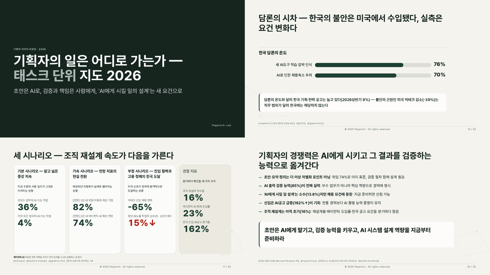

지난번에 덱은 내용부터 잡아야 한다고 썼는데, 내용은 어찌어찌 잡혔거든?
근데 이번엔 디자인이 계속 맘에 안 드네
AI가 뽑아준 덱을 보는데… 분명 잘 만들긴 했는데 어디서 본 것 같은 PPT야
주제를 바꿔도 색만 바뀌고 계속 같은 양식이 나옴
이게 왜 이러지?? 🤔
옛날 USB 두 개를 꺼내봤어
디자인 참고자료를 어디서 구하나 하다가 옛날 USB 두 개가 생각났는데, 회사 다닐 때 아우디, BMW, 재규어랜드로버에 냈던 제안서랑 브랜드 공식 템플릿이 그대로 들어 있었음
드라이브가 중간에 몇 번을 뻗어서 살리는 데만 한나절 걸렸는데 그래도 235개를 건짐
10년 전에 만들던 PPT를 지금 AI한테 보여주게 될 줄은 몰랐지… 😱
AI한테 다 보여줬더니
이걸 전부 AI한테 보여주고, 한두 번 나온 건 버리고 반복해서 나오는 패턴만 뽑아서 정리하게 했어
AI가 정리해온 패턴 목록을 보는데 기분이 묘했음
제안서는 자기 회사 색이 아니라 고객사, 그러니까 그 덱을 읽을 사람의 색을 쓴다든가 (BMW에 낼 땐 파란색, 롯데에 낼 땐 빨간색), 프리미엄 브랜드 공식 템플릿도 흰 바탕이라든가
나는 만들 때마다 그렇게 했는데, AI는 내가 보여주기 전까진 이 규칙을 안 쓰고 있었던 거지
10년 동안 덱 만들던 습관이 목록으로 나오니까 좀… 묘해 🙂
근데 계속 같은 PPT가 나왔다
여기까지 시켜놓고 다시 뽑았는데도 결과물이 또 비슷해
내가 정확히 뭐라고 했냐면 "컬러만 조금 바꾼, 크게 변한 게 없는 PPT로 보여"
알고 보니 AI가 계속 색만 갈아끼우고 있었던 거임
색을 바꿔도 계속 같은 PPT처럼 보이던 이유가 뼈대에 있었던 것 같음, 표지 구조, 제목 처리, 그래프를 그리는 방식이 계속 같았거든
그래서 주문을 바꿨어 내용은 한 글자도 건드리지 말고, 배치·구성·그래프까지 전부 다시
같은 내용, 완전히 다른 덱
그렇게 나온 게 아래 리포트
내용은 'IT 기획자의 일은 어디로 가는가', 나 같은 기획자한테 지금 제일 궁금한 주제라 골랐던 거
물론 뽑고 끝은 아니었고 직접 넘겨보면서 잡은 것들이 있는데, 마이너스 65%가 그래프에서 제일 높이 솟아 있질 않나 (하락인데 상승처럼 보임 🤣) 문장으로 늘어진 결론 페이지는 '한 줄 요점: 짧은 설명' 형식으로 다시 쓰게 하고… 그런 건 내가 넘겨보면서 "어색해"라고 짚어줘야 고쳐지더라

색만 바꿀 땐 계속 비슷하더니 배치랑 그래프까지 다시 시키니까 좀 달라졌음, 그래도 넘겨보면서 고칠 건 남아 있더라
오늘도 만들고 있는 중인 TickDeck 이야기
참, USB에서 8년 전에 창업해보겠다고 만들었던 덱도 같이 나왔는데… 그건 또 다른 이야기라 다음 기회에